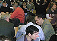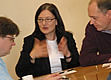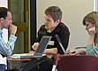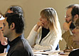
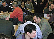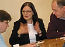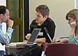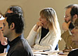
 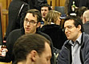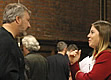
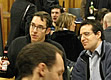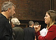We have several stages after submission of proposals to help make the conference the best it can be.
Feedback
The feedback stage is between 3rd January and 31st January.
During the feedback stage, we look at all the sessions that were submitted by 3rd January and give them feedback to improve the submission and help make it the best it can be before it goes into the review stage. Sessions can be modified and resubmitted until the hard deadline of 31st January.
We like each submission to have at least three pieces of feedback, so sessions will be ordered such that those with fewest feedback items are at the top – but it's up to you which sessions you give feedback on. The more feedback you have time to give, the better, as it can be very helpful to session proposers, especially those not as familiar with SPA or new to presenting.
At this stage, feedback is seen by the submitter themselves along with everyone else who has access, so it's important to be constructive. Don't forget that some of these people may be submitting to a conference for the first time ever, and your comments may be the first feedback they have received for their conference proposal. The point of this stage is to help submitters make the best proposal they can – so ask them to clarify things, suggest modifications to the session, and of course, positive feedback is welcome!
Review
The review stage is between 1st February and 14th March.
During the review stage we are closed to new submissions and existing submissions can't be edited, and this is the stage at which we decide which sessions we'd like to include in the conference. We mark submissions on four criteria:
1. Is this session worthwhile? For example, does it deliver tangible benefits to attendees?
2. Will this session work? For example, will it achieve its stated goals in the time allotted, is the process clearly defined?
3. Is the session exciting?
4. Overall, do you think we should accept this session?
There is more context to help you answer these questions in the review form.
We also make suggestions about the submissions – for example if we feel a session would be really good, but would require shepherding.
Submitters do not get notified of the reviews, but if they have been involved in the feedback stages (and we encourage everyone to get involved) they will have access so it's still important to be constructive. And it would be bad form to down-vote a session you see as a competitor to one you have submitted!
Again, ideally we would like every session to receive at least three reviews so that we can be sure the conference will have wide appeal.
We encourage everyone to get involved in reviewing as well, even if you haven't been to SPA Conference before – the basis is whether you would like to attend the session or think it would be valuable.
Programme Meeting
The Programme Meeting will be on Saturday 15th March in Central London. The exact venue will be announced closer the time. If you would like to be involved in the Programme Meeting, please contact us.
At this stage, submissions are still anonymous. We lay out cards with all the sessions and their scores, and formulate a draft programme. High scores are not the only thing we look at, as we want the programme to be as varied and balanced as possible, so we might not want four sessions on Node.js, for example. Those present are also given the opportunity to advocate for particular sessions – for example if it has received average reviews but they feel it would complement other sessions at the conference.
We then reveal names to check that no-one has too many sessions in, or several at the same time.
We will announce the programme on 1st April.
Shepherding
New presenters are offered the support of a shepherd, and any presenter can ask for one. A shepherd is someone who has experience presenting, maybe at SPA, and ideally in a similar area to the session leaders. They offer advice and support to help people prepare their sessions, and may meet with the session leaders and perhaps help arrange dry-runs prior to the conference. (We do recommend that you have at least one dry-run of your session, regardless of whether the session is shepherded.)
We are always looking for people to help shepherd, so please do let us know if you'd like to get involved in this.
Key dates
Feedback: 3rd January - 31st January
Review: 1st February - 14th March
Programme Meeting: 15th March
Shepherding: 1st April to conference.
If you have any questions or would like to be involved, please contact us:
programme @ spaconference.org
-- Andrew Seward and Anna Shipman, Programme Chairs, SPA2014.